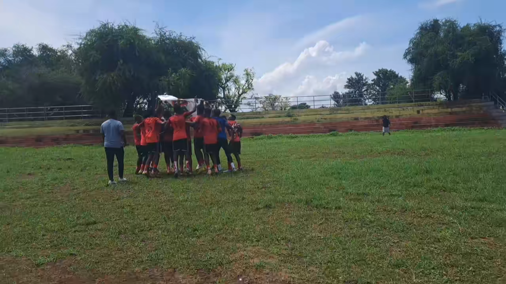

About Me
Background
I am Natnael, a student of Software Engineering at Addis Ababa University.
I am curious about how technology does what it does and how it can be used to solve real-life issues.
I have learned the fundamentals of programming, data structures, and algorithms from my studies.
I push myself beyond the classroom to break and create things in order to learn better.
I am particularly interested in a mix of low-level systems programming and high-level software design.
I prefer optimizing backend performance, trying to understand version control systems like Git, and
crafting clean and responsive user interfaces. I dive headfirst into everything software development.
I've already taken fundamental courses such as Database Systems, Data Structures and Algorithms
in C++, Object-Oriented Programming, Python Programming, and Fundamentals of Networking. I've also
taken mathematically based courses such as Discrete Mathematics and Applied Mathematics I, II, and
III. They've given me a solid background both in programming and in more domain-based Software
Engineering concepts that I'd like to keep studying.I like clean, readable, and sensible code along
with learning for life. I'm currently learning version control internals and web development. I eventually
would like to understand how large systems like distributed systems and development tools are built from
the ground up.
Aside from technical work, I believe in discipline and consistency. I'm not opposed to fighting
with tricky code, reworking the same thing multiple times, or even abandoning a project when it
can teach me something valuable. My goal is to be a developer who not only knows how to code but
also painstakingly is concerned about how it's done and how it impacts things. My hobbies include
playing table tennis, football, and video games to keep active, competitive, and creative.I'm just
starting out, but to me, every obstacle, every bug, and every build is a step towards mastery.
Hobbies
- Table Tennis (also called Ping-Pong)
I used to play Table Tennis since i was in high-school and i still enjoy playing it on my free time.
- Football

I also enjoy playing football and the above football field is located in Addis Ababa University. I love playing
football there with my friends.
- Gaming

Above is one of the usual games i play which is the FIFA game series. Since it's very competative it makes it
very enjoyable and an ideal way to spend time with my friends.